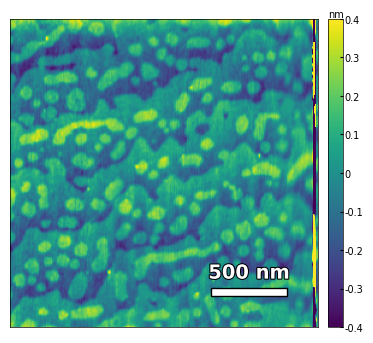
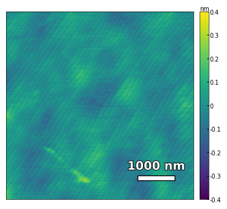
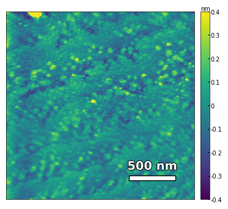
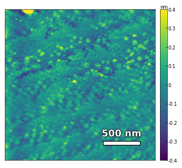

AFM and XRD#
%load_ext autoreload
%autoreload 2
import os
import re
import numpy as np
import matplotlib.pyplot as plt
import sys
from m3util.viz.style import set_style
from m3util.viz.printing import printer
from m3util.viz.layout import layout_fig
from m3util.viz.text import labelfigs
from sto_rheed.AFM import visualize_afm_image, afm_substrate
from sto_rheed.XRD import plot_xrd, plot_rsm
# from be.dataset import BE_Dataset
printing = printer(basepath = '../Figures/2.AFM_XRD/')
set_style("printing")
printing set for seaborn
Sample 1 - treated_213nm#
img2 = np.loadtxt('../data/AFM/treated_213nm-film.txt')[:256]
scalebar_dict = {'image_size': 2008, 'scale_size': 500, 'units': 'nm'}
visualize_afm_image(img2, colorbar_range=[-4e-10, 4e-10], figsize=(6,4), scalebar_dict=scalebar_dict,)

img3 = np.loadtxt('../data/AFM/treated_213nm-substrate-tilted.txt')[:256]
analyzer = afm_substrate(img3, pixels=256, size=5e-6)
img_rot, size_rot = analyzer.rotate_image(angle=-50, demo=False)
x, z, peak_indices, valley_indices = analyzer.slice_rotate(img_rot, size_rot, j=60, prominence=1e-5, width=2, xz_angle=3, demo=False)
step_heights, step_widths, miscut = analyzer.calculate_substrate_properties(img_rot, size_rot, xz_angle=3, prominence=1e-3, width=2, style='simple', fixed_height=3.91e-10, std_range=1, demo=False)
Step height = 3.91e-10 +- 0.00e+00
Step width = 2.13e-07 +- 8.87e-08
Miscut = 0.131° +- 0.074°
Sample 2 - treated_81nm:#
img1 = np.loadtxt('../data/AFM/treated_81nm-substrate.txt')[:256]
scalebar_dict = {'image_size': 5000, 'scale_size': 1000, 'units': 'nm'}
visualize_afm_image(img1, colorbar_range=[-4e-10, 4e-10], figsize=(6,4), scalebar_dict=scalebar_dict)
img2 = np.loadtxt('../data/AFM/treated_81nm-film.txt')[:256]
scalebar_dict = {'image_size': 2008, 'scale_size': 500, 'units': 'nm'}
visualize_afm_image(img2, colorbar_range=[-4e-10, 4e-10], figsize=(6,4), scalebar_dict=scalebar_dict)


img3 = np.loadtxt('../data/AFM/treated_81nm-substrate.txt')[:256]
analyzer = afm_substrate(img3, pixels=256, size=5e-6)
img_rot, size_rot = analyzer.rotate_image(angle=-56, demo=False)
x, z, peak_indices, valley_indices = analyzer.slice_rotate(img_rot, size_rot, j=60, prominence=1e-13, width=1.5, xz_angle=0, demo=False)
# step_heights, step_widths, miscut = analyzer.calculate_simple(x, z, peak_indices, fixed_height=3.91e-5, demo=False)
step_heights, step_widths, miscut = analyzer.calculate_substrate_properties(img_rot, size_rot, xz_angle=0, prominence=1e-13, width=1.5,
style='simple', fixed_height=3.91e-10, std_range=1, demo=False)
Step height = 3.91e-10 +- 5.17e-26
Step width = 8.07e-08 +- 4.39e-08
Miscut = 0.330° +- 0.113°
Sample 3 - untreated_162nm#
img1 = np.loadtxt('../data/AFM/untreated_162nm-substrate.txt')[:256]
img1 = np.rot90(img1, k=2)
scalebar_dict = {'image_size': 5000, 'scale_size': 1000, 'units': 'nm'}
visualize_afm_image(img1, colorbar_range=[-4e-10, 4e-10], figsize=(6,4), scalebar_dict=scalebar_dict)
img2 = np.loadtxt('../data/AFM/untreated_162nm-film.txt')[:256]
scalebar_dict = {'image_size': 2008, 'scale_size': 500, 'units': 'nm'}
visualize_afm_image(img2, colorbar_range=[-4e-10, 4e-10], figsize=(6,4), scalebar_dict=scalebar_dict)
 

img3 = np.loadtxt('../data/AFM/untreated_162nm-substrate-tilted.txt')[:256]
analyzer = afm_substrate(img3, pixels=256, size=5e-6)
img_rot, size_rot = analyzer.rotate_image(angle=65, demo=False)
x, z, peak_indices, valley_indices = analyzer.slice_rotate(img_rot, size_rot, j=60, prominence=1e-13, width=2, xz_angle=2, demo=False)
step_heights, step_widths, miscut = analyzer.calculate_substrate_properties(img_rot, size_rot, xz_angle=2, prominence=1e-13, width=2, style='simple', fixed_height=3.91e-10/2, std_range=1, demo=False)
Step height = 1.95e-10 +- 0.00e+00
Step width = 1.62e-07 +- 8.27e-08
Miscut = 0.090° +- 0.135°
Summary of XRD and RSM#
fig = plt.figure(figsize=(8,8))
ax0 = plt.subplot2grid((4, 2), (0, 0), colspan=2) # colspan=2 means the plot spans 2 columns
files = ['../Data/XRD/substrate-XRD_42_49.xrdml', '../Data/XRD/treated_213nm-XRD_42_29.xrdml', '../Data/XRD/treated_81nm-XRD_42_29.xrdml', '../Data/XRD/untreated_162nm-XRD_42_29.xrdml']
labels = ['substrate', 'treated_213nm', 'treated_81nm', 'untreated_162nm']
plot_xrd(ax0, files, labels, diff=None, xrange=(44, 48.8), label_size=10, tick_size=8, legend_size=10)
labelfigs(ax0, 0, loc='tr', size=15, style='b', inset_fraction=(0.8, 0.1))
files_002 = ['../Data/XRD/treated_213nm-RSM_002.xrdml', '../Data/XRD/treated_81nm-RSM_002.xrdml', '../Data/XRD/untreated_162nm-RSM_002.xrdml']
for i, file in enumerate(files_002):
ax = plt.subplot2grid((4, 2), (i+1, 0))
plot_rsm(ax, file, label_size=10, tick_size=8)
ax.set_xlim(-0.0032, 0.0032)
ax.set_ylim(0.505, 0.520)
labelfigs(ax, i+1, loc='tr', size=15)
files_103 = ['../Data/XRD/treated_213nm-RSM_103.xrdml', '../Data/XRD/treated_81nm-RSM_103.xrdml', '../Data/XRD/untreated_162nm-RSM_103.xrdml']
for i, file in enumerate(files_103):
ax = plt.subplot2grid((4, 2), (i+1, 1))
plot_rsm(ax, file, label_size=10, tick_size=8, vmin=3, vmax=1e6)
ax.set_xlim(0.252, 0.260)
ax.set_ylim(0.764, 0.773)
labelfigs(ax, i+4, loc='tr', size=15)
plt.tight_layout()
printing.savefig(fig, 'S2-XRD_RSM')
plt.show()
print(f'\033[1mFig. S2 a\033[0m X-ray Diffraction result for a typical SrTiO3 substrate and samples. \
\033[1mb, c, d\033[0m Reciprocal Space Mapping results in (002) orientaion for sample treated_213nm, treated_81nm and untreated_162nm, respectively. \
\033[1me, f, g\033[0m Reciprocal Space Mapping results in (103) orientaion for sample treated_213nm, treated_81nm and untreated_162nm, respectively.')
../Figures/2.AFM_XRD/S2-XRD_RSM.png
../Figures/2.AFM_XRD/S2-XRD_RSM.svg

Fig. S2 a X-ray Diffraction result for a typical SrTiO3 substrate and samples. b, c, d Reciprocal Space Mapping results in (002) orientaion for sample treated_213nm, treated_81nm and untreated_162nm, respectively. e, f, g Reciprocal Space Mapping results in (103) orientaion for sample treated_213nm, treated_81nm and untreated_162nm, respectively.